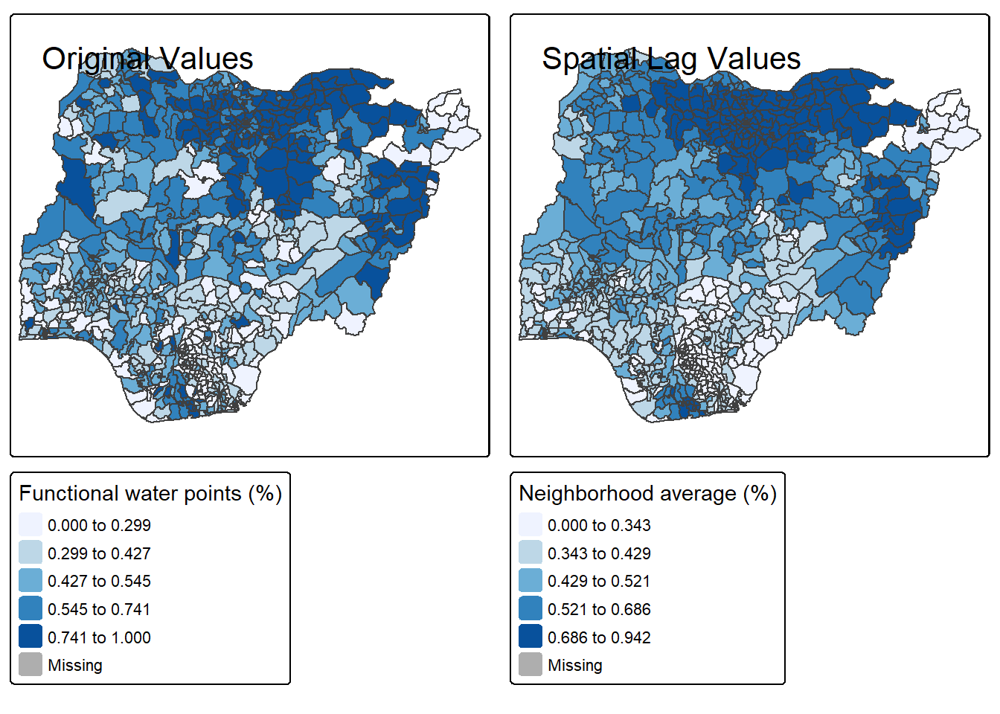
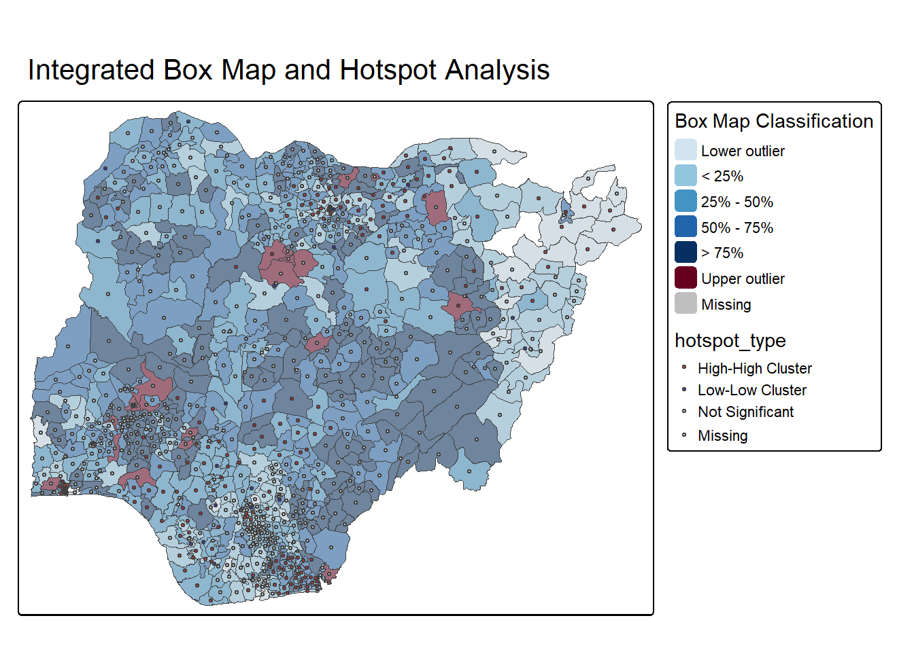

pacman::p_load(tmap, tidyverse, sf, spdep)Hands-on Exercise 8c: Analytical Mapping
1. Getting Started
1.1 Installing and loading packages
1.2 Importing data
For this exercise, a prepared dataset called NGA_wp.rds will be used. The dataset is a polygon feature data.frame providing information on water points of Nigeria at the LGA level. This can be found in the rds sub-directory of the hands-on data folder.
NGA_wp <- read_rds("data/rds/NGA_wp.rds")2. Basic Choropleth Mapping
2.1 Visualising distribution of water points
# Create map of total water points with proper tmap v4 syntax
p2 <- tm_shape(NGA_wp) +
tm_fill("total_wp",
fill.scale = tm_scale_intervals(n = 10,
style = "equal",
values = "brewer.blues"),
fill.legend = tm_legend(title = "Total Water Points")) +
tm_borders(lwd = 0.1) +
tm_title(text = "Distribution of Total Water Points by LGAs")
# Create map of functional water points with proper tmap v4 syntax
p1 <- tm_shape(NGA_wp) +
tm_fill("wp_functional",
fill.scale = tm_scale_intervals(n = 10,
style = "equal",
values = "brewer.blues"),
fill.legend = tm_legend(title = "Functional Water Points")) +
tm_borders(lwd = 0.1) +
tm_title(text = "Distribution of Functional Water Points by LGAs")
# Arrange maps side by side
tmap_arrange(p2, p1, nrow = 1)2.2 Impact of Classification Methods on Visualizations
Classification methods significantly affect how patterns are perceived on choropleth maps. Below is a comparison of different classification approaches:
tm_shape(NGA_wp) +
tm_fill("total_wp",
fill.scale = tm_scale_intervals(
n = 5,
style = "jenks",
values = "brewer.blues"),
fill.legend = tm_legend(title = "Jenks classification")) +
tm_borders(lwd = 0.1) +
tm_layout(legend.outside = TRUE,
legend.outside.position = "right")tm_shape(NGA_wp) +
tm_fill("total_wp",
fill.scale = tm_scale_intervals(
n = 5,
style = "quantile",
values = "brewer.blues"),
fill.legend = tm_legend(title = "Quantile classification")) +
tm_borders(lwd = 0.1) +
tm_layout(legend.outside = TRUE,
legend.outside.position = "right")The Jenks classification minimizes within-class variance, highlighting natural breaks in the data, while quantile classification ensures an equal number of observations in each class. Note how this changes the visual patterns revealed in the maps.
3. Choropleth Maps for Rates
In spatial analysis, mapping rates rather than raw counts is critical because water points are not equally distributed in space. Without accounting for the total number of water points in an area, maps end up visualizing size rather than the phenomenon of interest.
3.1 Deriving Proportion of Functional and Non-Functional Water Points
NGA_wp <- NGA_wp %>%
mutate(pct_functional = wp_functional/total_wp) %>%
mutate(pct_nonfunctional = wp_nonfunctional/total_wp)3.2 Plotting map of rate
tm_shape(NGA_wp) +
tm_fill("pct_functional",
fill.scale = tm_scale_intervals(
n = 10,
style = "equal",
values = "brewer.blues"),
fill.legend = tm_legend(
title = "% Functional",
hist = TRUE)) +
tm_borders(lwd = 0.1) +
tm_title(text = "Rate map of functional water point by LGAs") +
tm_layout(legend.outside = TRUE)3.3 Visualizing Uncertainty in Rate Maps
When working with rates, areas with small populations (or in this case, few water points) can produce unstable rates. Small changes in counts can lead to large swings in percentages.
NGA_wp <- NGA_wp %>%
mutate(reliability = case_when(
total_wp < 10 ~ "Low",
total_wp < 50 ~ "Medium",
TRUE ~ "High"
))
# Create faceted map with tmap v4 syntax
tm_shape(NGA_wp) +
tm_fill("pct_functional",
style = "quantile",
n = 10,
palette = "Blues") +
tm_borders(lwd = 0.1,
alpha = 1) +
tm_facets(by = "reliability",
ncol = 3) +
tm_layout(legend.outside = TRUE,
panel.labels = c("Low reliability", "Medium reliability", "High reliability"))This faceted approach helps identify where results might be less reliable due to small sample sizes, an important consideration when interpreting spatial patterns.
4. Extreme Value Maps
Extreme value maps are variations of common choropleth maps where the classification is designed to highlight extreme values at the lower and upper end of the scale, with the goal of identifying outliers. These maps were developed in the spirit of spatializing EDA, i.e., adding spatial features to commonly used approaches in non-spatial EDA (Anselin 1994).
4.1 Percentile Map
The percentile map is a special type of quantile map with six specific categories: 0-1%, 1-10%, 10-50%, 50-90%, 90-99%, and 99-100%. The corresponding breakpoints can be derived by means of the base R quantile command, passing an explicit vector of cumulative probabilities as c(0,.01,.1,.5,.9,.99,1). Note that the begin and endpoint need to be included.
Data Preparation
Step 1: Exclude records with NA by using the code chunk below.
NGA_wp <- NGA_wp %>%
drop_na()Step 2: Creating customised classification and extracting values
percent <- c(0,.01,.1,.5,.9,.99,1)
var <- NGA_wp["pct_functional"] %>%
st_set_geometry(NULL)
quantile(var[,1], percent) 0% 1% 10% 50% 90% 99% 100%
0.0000000 0.0000000 0.2169811 0.4791667 0.8611111 1.0000000 1.0000000 When variables are extracted from an sf data.frame, the geometry is extracted as well. For mapping and spatial manipulation, this is the expected behavior, but many base R functions cannot deal with the geometry. Specifically, the quantile() gives an error. As a result st_set_geomtry(NULL) is used to drop geometry field.
Why writing functions?
Writing a function has three big advantages over using copy-and-paste:
- You can give a function an evocative name that makes your code easier to understand.
- As requirements change, you only need to update code in one place, instead of many.
- You eliminate the chance of making incidental mistakes when you copy and paste (i.e. updating a variable name in one place, but not in another).
Source: Chapter 19: Functions of R for Data Science.
Creating the get.var function
Firstly, we will write an R function as shown below to extract a variable (i.e. wp_nonfunctional) as a vector out of an sf data.frame.
- arguments:
- vname: variable name (as character, in quotes)
- df: name of sf data frame
- returns:
- v: vector with values (without a column name)
get.var <- function(vname,df) {
v <- df[vname] %>%
st_set_geometry(NULL)
v <- unname(v[,1])
return(v)
}A percentile mapping function
Next, we will write a percentile mapping function by using the code chunk below.
percentmap <- function(vnam, df, legtitle=NA, mtitle="Percentile Map"){
percent <- c(0,.01,.1,.5,.9,.99,1)
var <- get.var(vnam, df)
bperc <- quantile(var, percent)
tm_shape(df) +
tm_polygons() +
tm_shape(df) +
tm_fill(vnam,
title=legtitle,
breaks=bperc,
palette="Blues",
labels=c("< 1%", "1% - 10%", "10% - 50%", "50% - 90%", "90% - 99%", "> 99%")) +
tm_borders() +
tm_layout(main.title = mtitle,
title.position = c("right","bottom"))
}Test drive the percentile mapping function
To run the function, type the code chunk as shown below.
percentmap("total_wp", NGA_wp)
Note that this is just a bare bones implementation. Additional arguments such as the title, legend positioning just to name a few of them, could be passed to customise various features of the map.
4.2 Box map
In essence, a box map is an augmented quartile map, with an additional lower and upper category. When there are lower outliers, then the starting point for the breaks is the minimum value, and the second break is the lower fence. In contrast, when there are no lower outliers, then the starting point for the breaks will be the lower fence, and the second break is the minimum value (there will be no observations that fall in the interval between the lower fence and the minimum value).
ggplot(data = NGA_wp,
aes(x = "",
y = wp_nonfunctional)) +
geom_boxplot()Displaying summary statistics on a choropleth map by using the basic principles of boxplot.
To create a box map, a custom breaks specification will be used. However, there is a complication. The break points for the box map vary depending on whether lower or upper outliers are present.
Creating the boxbreaks function
The code chunk below is an R function that creating break points for a box map.
- arguments:
- v: vector with observations
- mult: multiplier for IQR (default 1.5)
- returns:
- bb: vector with 7 break points compute quartile and fences
boxbreaks <- function(v,mult=1.5) {
qv <- unname(quantile(v))
iqr <- qv[4] - qv[2]
upfence <- qv[4] + mult * iqr
lofence <- qv[2] - mult * iqr
bb <- vector(mode="numeric",length=7)
if (lofence < qv[1]) {
bb[1] <- lofence
bb[2] <- floor(qv[1])
} else {
bb[2] <- lofence
bb[1] <- qv[1]
}
if (upfence > qv[5]) {
bb[7] <- upfence
bb[6] <- ceiling(qv[5])
} else {
bb[6] <- upfence
bb[7] <- qv[5]
}
bb[3:5] <- qv[2:4]
return(bb)
}Test drive the newly created function
Let’s test the newly created function
var <- get.var("wp_nonfunctional", NGA_wp)
boxbreaks(var)[1] -56.5 0.0 14.0 34.0 61.0 131.5 278.0Boxmap function
The code chunk below is an R function to create a box map.
- arguments:
- vnam: variable name (as character, in quotes)
- df: simple features polygon layer
- legtitle: legend title
- mtitle: map title
- mult: multiplier for IQR
- returns:
- a tmap-element (plots a map)
boxmap <- function(vnam, df,
legtitle=NA,
mtitle="Box Map",
mult=1.5){
var <- get.var(vnam,df)
bb <- boxbreaks(var)
tm_shape(df) +
tm_polygons() +
tm_shape(df) +
tm_fill(vnam,title=legtitle,
breaks=bb,
palette="Blues",
labels = c("lower outlier",
"< 25%",
"25% - 50%",
"50% - 75%",
"> 75%",
"upper outlier")) +
tm_borders() +
tm_layout(main.title = mtitle,
title.position = c("left",
"top"))
}tmap_mode("plot")
boxmap("wp_nonfunctional", NGA_wp)
4.3 Spatial Autocorrelation Visualization
Understanding whether spatial patterns show clustering is crucial. A simple approach to visualizing potential spatial autocorrelation is to map both the variable of interest and its spatial lag (neighborhood average):
# Ensure geometry column is properly set
NGA_wp$geometry <- st_geometry(NGA_wp)
# Create neighborhood weights
NGA_nb <- poly2nb(NGA_wp, queen = TRUE)
NGA_wt <- nb2listw(NGA_nb, style = "W", zero.policy = TRUE)
# Calculate spatial lag of functional water point percentages
NGA_wp$lag_pct_functional <- lag.listw(NGA_wt, NGA_wp$pct_functional)
# Create original values map
map1 <- tm_shape(NGA_wp) +
tm_fill("pct_functional",
style = "quantile",
palette = "Blues",
title = "Functional water points (%)") +
tm_borders() +
tm_layout(title = "Original Values",
frame = TRUE)
# Create spatial lag map
map2 <- tm_shape(NGA_wp) +
tm_fill("lag_pct_functional",
style = "quantile",
palette = "Blues",
title = "Neighborhood average (%)") +
tm_borders() +
tm_layout(title = "Spatial Lag Values",
frame = TRUE)
# Arrange both maps side-by-side
tmap_arrange(map1, map2, ncol = 2)
This side-by-side comparison helps identify potential spatial clustering or dispersion patterns, a crucial first step before formal spatial autocorrelation analysis.
5. Advanced Techniques for Analytical Mapping
5.1 Visualizing Multiple Variables Simultaneously
Multivariate mapping can reveal complex relationships between different aspects of water point data. The bivariate choropleth technique below combines functional and non-functional percentages:
# Handle NA values properly with a different approach
NGA_wp <- NGA_wp %>%
mutate(
# First ensure no NA values by replacing with 0
pct_functional_clean = if_else(is.na(pct_functional), 0, pct_functional),
pct_nonfunctional_clean = if_else(is.na(pct_nonfunctional), 0, pct_nonfunctional),
# Then create factor categories
func_cat = cut(pct_functional_clean,
breaks = c(-0.001, 0.33, 0.66, 1),
labels = c("Low", "Medium", "High")),
nonfunc_cat = cut(pct_nonfunctional_clean,
breaks = c(-0.001, 0.33, 0.66, 1),
labels = c("Low", "Medium", "High")),
# Create combined category
bivariate_cat = paste(func_cat, nonfunc_cat, sep = "-")
)
# Create a color palette for bivariate map
bivariate_colors <- c(
"High-Low" = "#1a9641", # High functional, Low non-functional (good)
"High-Medium" = "#a6d96a",
"High-High" = "#ffffbf",
"Medium-Low" = "#66bd63",
"Medium-Medium" = "#fee08b",
"Medium-High" = "#fdae61",
"Low-Low" = "#d9ef8b",
"Low-Medium" = "#f46d43",
"Low-High" = "#d73027" # Low functional, High non-functional (poor)
)
# Create the bivariate map with corrected tmap v4 syntax
tm_shape(NGA_wp) +
tm_fill("bivariate_cat",
fill.scale = tm_scale_categorical(values = bivariate_colors),
fill.legend = tm_legend(title = "Functional vs Non-functional")) +
tm_borders(lwd = 0.1) +
tm_layout(title = "Bivariate Analysis of Water Point Status",
legend.outside = TRUE)This approach reveals LGAs facing compound challenges (low functionality and high non-functionality) as well as those performing well across both metrics.
5.2 Spatial Pattern Analysis
For deeper understanding of water point patterns, hotspot analysis can reveal statistically significant clusters:
set.seed(42) # For reproducibility
NGA_localMoran <- localmoran(NGA_wp$pct_nonfunctional,
NGA_wt,
zero.policy = TRUE,
na.action = na.omit)
# Bind results to spatial dataframe
NGA_wp$localI <- NGA_localMoran[,1]
NGA_wp$p_value <- NGA_localMoran[,5]
# Create hotspot map
NGA_wp <- NGA_wp %>%
mutate(hotspot_type = case_when(
p_value > 0.05 ~ "Not Significant",
localI > 0 & p_value <= 0.05 ~ "High-High Cluster",
localI < 0 & p_value <= 0.05 ~ "Low-Low Cluster",
TRUE ~ "Spatial Outlier"
))
tm_shape(NGA_wp) +
tm_fill("hotspot_type",
palette = c("High-High Cluster" = "red",
"Low-Low Cluster" = "blue",
"Spatial Outlier" = "purple",
"Not Significant" = "grey90"),
title = "Cluster Analysis") +
tm_borders(lwd = 0.1, alpha = 0.5) +
tm_layout(main.title = "Hotspot Analysis of Non-functional Water Points",
legend.outside = TRUE)This analysis identifies statistically significant spatial clusters of high non-functional water point rates (hotspots) and low rates (coldspots), providing evidence-based targets for intervention programs.
6. Combining Visualization Techniques
Effective spatial analysis often requires combining different visualization techniques to gain comprehensive insights. The following example integrates box map classification with hotspot analysis:
# Combine box classification with hotspot analysis
NGA_wp <- NGA_wp %>%
mutate(box_cat = cut(wp_nonfunctional,
breaks = boxbreaks(var),
labels = c("Lower outlier",
"< 25%",
"25% - 50%",
"50% - 75%",
"> 75%",
"Upper outlier"),
include.lowest = TRUE))
# Create integrated visualization
tm_shape(NGA_wp) +
tm_fill("box_cat",
palette = c("Lower outlier" = "#d1e5f0",
"< 25%" = "#92c5de",
"25% - 50%" = "#4393c3",
"50% - 75%" = "#2166ac",
"> 75%" = "#053061",
"Upper outlier" = "#67001f"),
title = "Box Map Classification") +
tm_borders(lwd = 0.1, alpha = 0.5) +
tm_symbols(size = 0.2,
col = "hotspot_type",
palette = c("High-High Cluster" = "red",
"Low-Low Cluster" = "blue",
"Spatial Outlier" = "purple",
"Not Significant" = "grey90"),
title = "Cluster Type",
alpha = 0.7) +
tm_layout(main.title = "Integrated Box Map and Hotspot Analysis",
legend.outside = TRUE)
This integrated approach reveals not only areas with extreme values but also whether these extremes form statistically significant spatial patterns, providing deeper analytical insights.
7. Reference
Credits to Prof Kam.